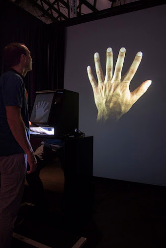

Fun The Mental
Hand Art Project

I collaborated on Untitled Digital Art (Hand Art Series) with Professor Golan Levin at the Carnegie Mellon STUDIO for Creative Inquiry.
Project Website.
Images and Information.
STUDIO Website
My contribution was the porting of a singular value decomposition procedure to using LAPAK calls. I also wrote a blazing fast mesh subdivision algorithm that has optimized methods for doing subdivisions on meshes that have the same topology. Please see
Subdivision Algorithm on GitHub.
Mesh Validation Routines
Final Hand Project Code Repository.